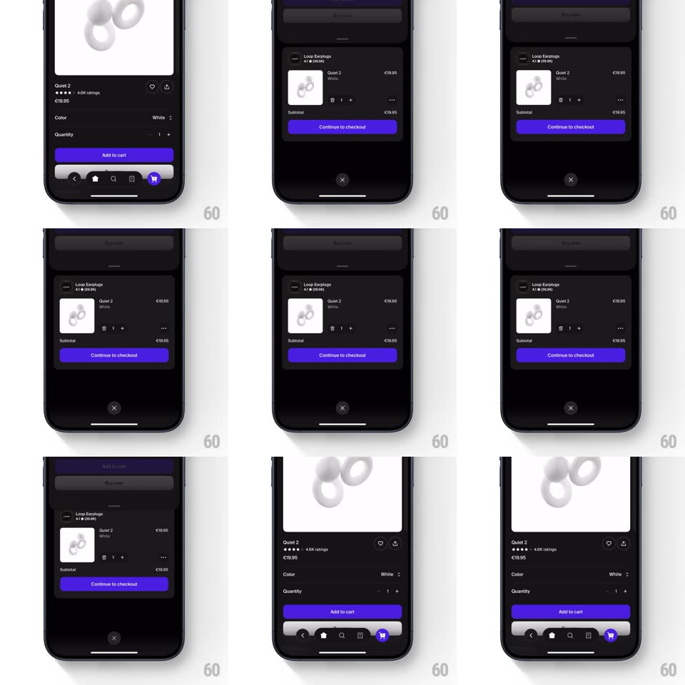

Media
Frame-by-frame

Rebuild this interaction 1:1: Shop's cart sheet - tapping the floating cart icon slides a dark bottom sheet up over the product page revealing the cart line item, subtotal, and "Continue to checkout", with a dimmed peek of the page behind.

Rebuild this interaction 1:1: Shop's cart sheet - tapping the floating cart icon slides a dark bottom sheet up over the product page revealing the cart line item, subtotal, and "Continue to checkout", with a dimmed peek of the page behind. ## Integration Integration: stack-agnostic spec - springs given as stiffness/damping, timed motions as duration + curve; map every value to your framework and animation library of choice. ## Scene Dark product page (Loop earplugs). The sheet: dark surface with a top grabber, a cart line item (product thumbnail, "Loop Earplugs 4.1 (19.9K)", "Quiet 2 / White", price, quantity stepper, "..."), a Subtotal row, a purple "Continue to checkout" button, and a circular X button centered below the sheet. ## Motion spec Pattern: springy cart sheet with backdrop peek. - Tap the cart icon: the sheet rises (spring ~300/22, gentle overshoot) covering ~75% of the screen; the product page behind dims to ~35% and scales down a hair (0.97) - a peek, not a blackout. - Sheet content staggers in during the rise: line item first (fade + 10px rise, 250ms), subtotal 80ms later, checkout button last with a single pulse (scale 1 -> 1.02 -> 1). - The X below the sheet fades in after the rise completes (200ms). - Dismiss (X, backdrop tap, or drag-down): the sheet tracks the drag 1:1 with resistance past its resting point, then springs down and out (spring ~320/24), the backdrop un-dimming in sync. ## Calibration - The sheet is the same near-black as the page - separation comes from the dim, the grabber, and a hairline top edge. - Quantity stepper taps update the subtotal with a 200ms crossfade, no sheet movement. ## Reduced motion Sheet fades in over a static dim. ## Don't miss - The backdrop stays interactive-looking (blurred live page) - the user never loses context of what they were browsing. - The X sits BELOW the sheet on the dim, centered - an unusual placement worth copying exactly.